COMPOSITOR
Wolfgang Amadeus Mozart
Genio del clasicismo musical, reconocido por sus óperas, conciertos y sinfonías llenos de elegancia y riqueza melódica.
Escuchar música →Desde las melodías del piano hasta los ritmos del K-pop, el rap y el reguetón. Conoce las historias y los sonidos de artistas y bandas de diferentes generaciones.
Explorar artistas ↓Composiciones que emocionan a través del tiempo.
Genio del clasicismo musical, reconocido por sus óperas, conciertos y sinfonías llenos de elegancia y riqueza melódica.
Escuchar música →Pianista y compositor italiano conocido por sus piezas minimalistas, delicadas y cinematográficas. Una recomendación para estudiar o relajarse.
Escuchar música →Pianista y compositor surcoreano famoso por sus melodías emotivas. Su pieza River Flows in You es una de sus obras más conocidas.
Escuchar música →Guitarras potentes, grandes escenarios y canciones inolvidables.
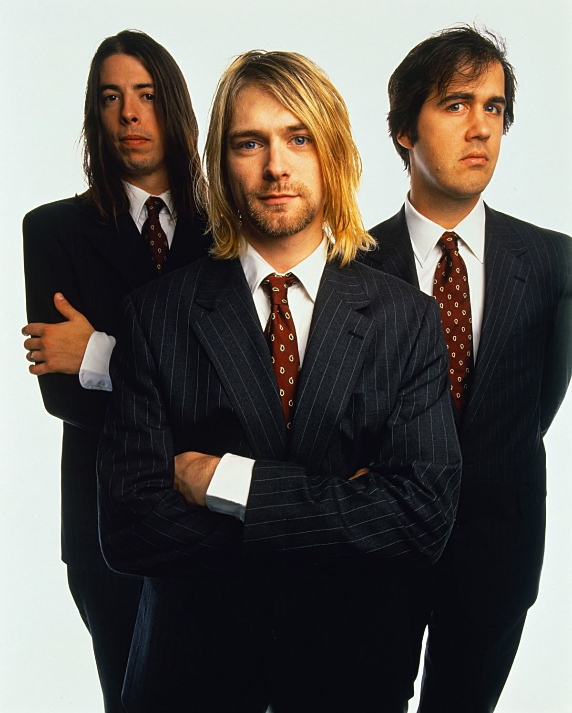
Banda estadounidense liderada por Kurt Cobain. Fue fundamental para popularizar el grunge durante los años noventa.
Escuchar música →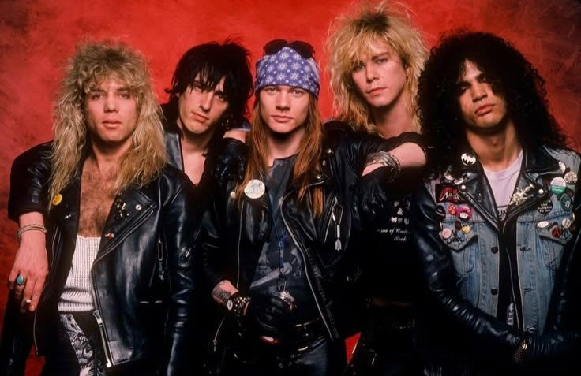
Grupo conocido por sus solos de guitarra, su energía en vivo y clásicos como Sweet Child o' Mine.
Escuchar música →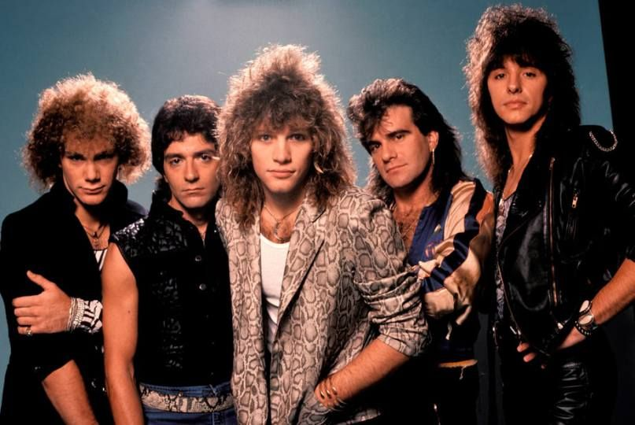
Banda estadounidense que combina rock, estribillos memorables y baladas como Livin' on a Prayer.
Escuchar música →Ritmos jamaicanos, identidad cultural y mensajes de unión.
Músico jamaicano que mezcla reggae con hip-hop y otros sonidos modernos. Es hijo de Bob Marley.
Escuchar música →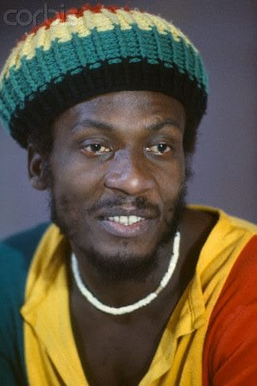
Cantante y actor jamaicano que ayudó a llevar el reggae a públicos internacionales con canciones llenas de esperanza.
Escuchar música →Figura esencial del reggae mundial, recordado por sus canciones sobre amor, paz, libertad y justicia social.
Escuchar música →Sintetizadores, tecnología y experiencias sonoras.
DJ y productor escocés que combina música electrónica con pop y éxitos bailables.
Escuchar música →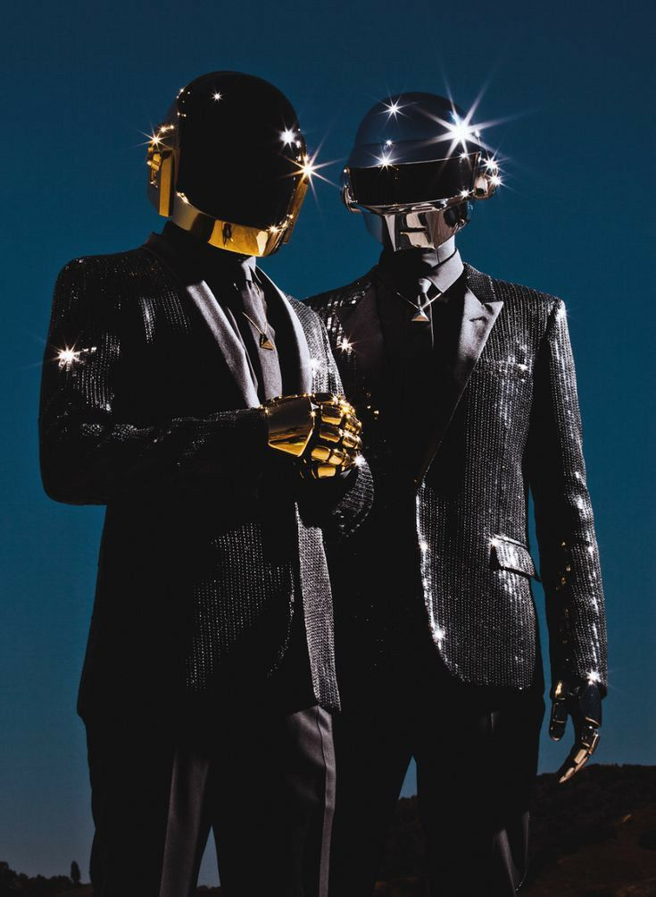
Dúo francés que dejó una huella importante en la música electrónica con sus sonidos futuristas y su estética de robots.
Escuchar música →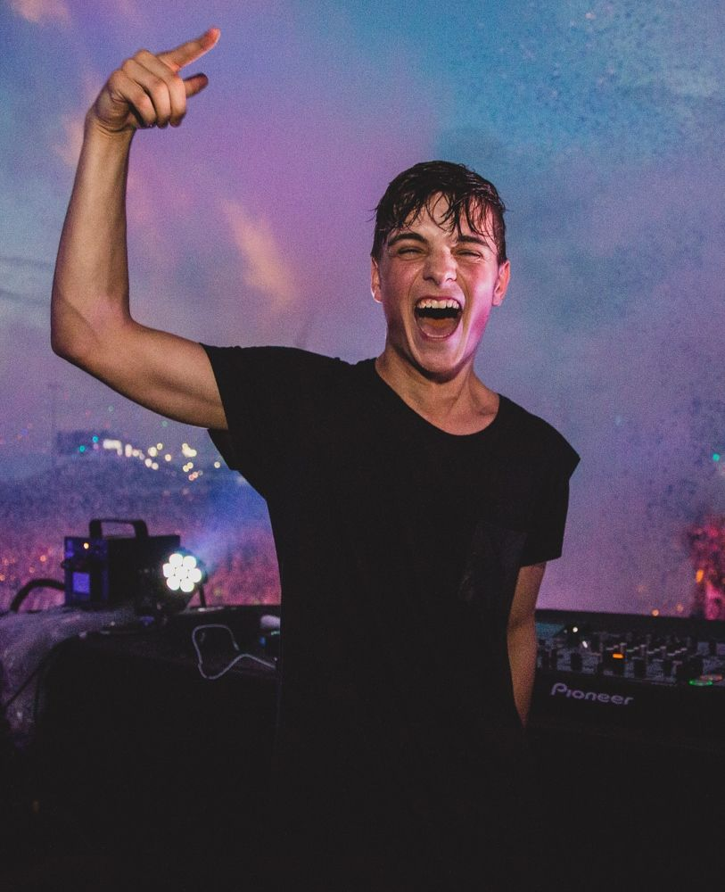
DJ y productor neerlandés conocido por sus festivales, grandes drops y canciones de música electrónica de baile.
Escuchar música →Voces personales, producción contemporánea y nuevas mezclas.
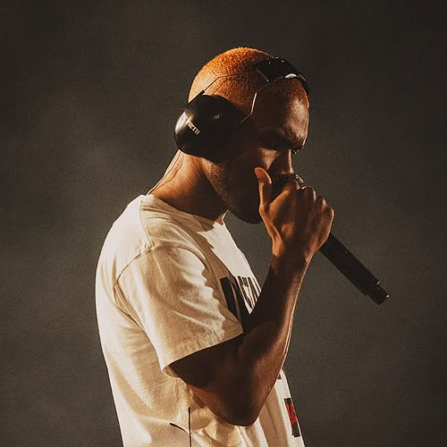
Cantautor estadounidense reconocido por sus letras íntimas, atmósferas envolventes y una propuesta innovadora de R&B.
Escuchar música →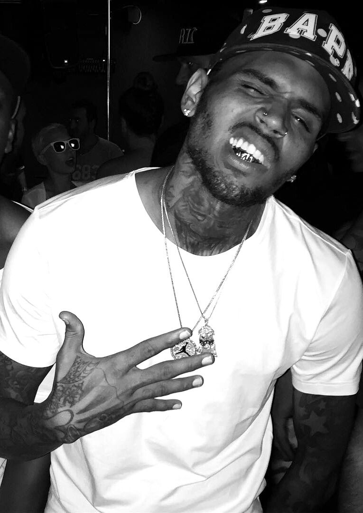
Cantante y bailarín estadounidense que mezcla R&B, pop y ritmos urbanos en sus producciones.
Escuchar música →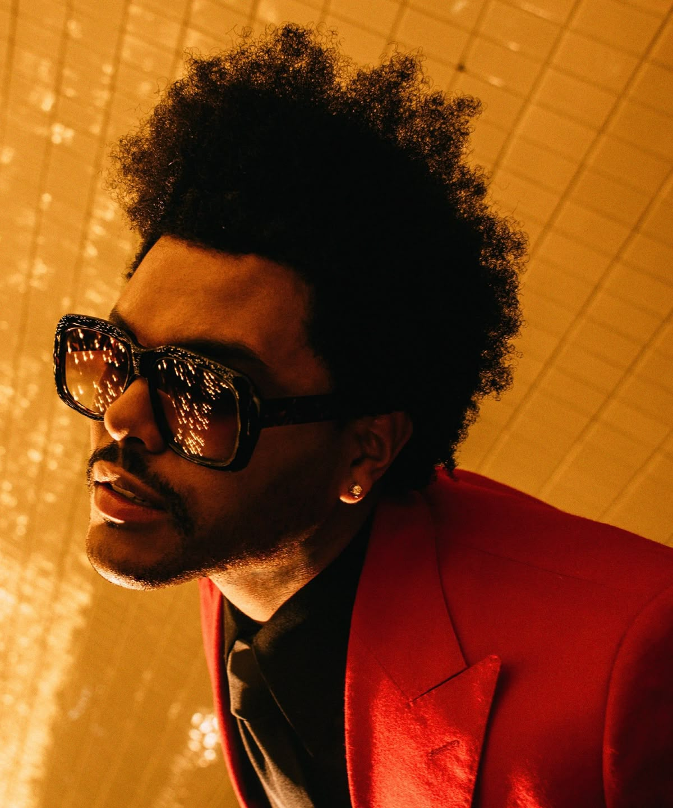
Artista canadiense que combina R&B, pop y elementos electrónicos con una identidad sonora oscura y cinematográfica.
Escuchar música →Ritmos latinos que conquistaron las pistas de baile.
Cantante colombiano que fusiona reguetón y pop latino, con éxitos que alcanzaron gran popularidad internacional.
Escuchar música →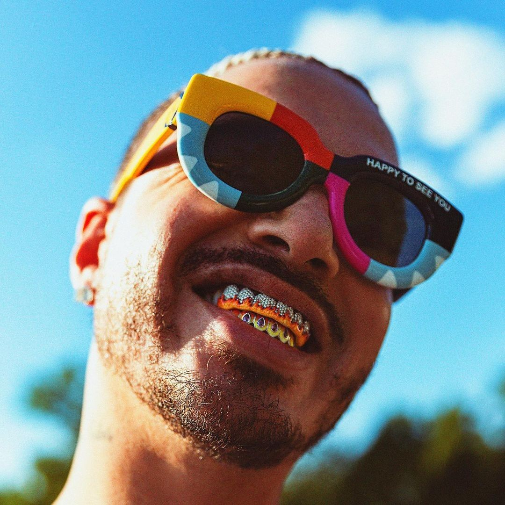
Artista colombiano que contribuyó a expandir el reguetón globalmente con colaboraciones y una identidad visual reconocible.
Escuchar música →Cantante puertorriqueño conocido por su voz melódica y por combinar reguetón con elementos de pop y música latina.
Escuchar música →Coreografías, conceptos visuales y producción musical coreana.
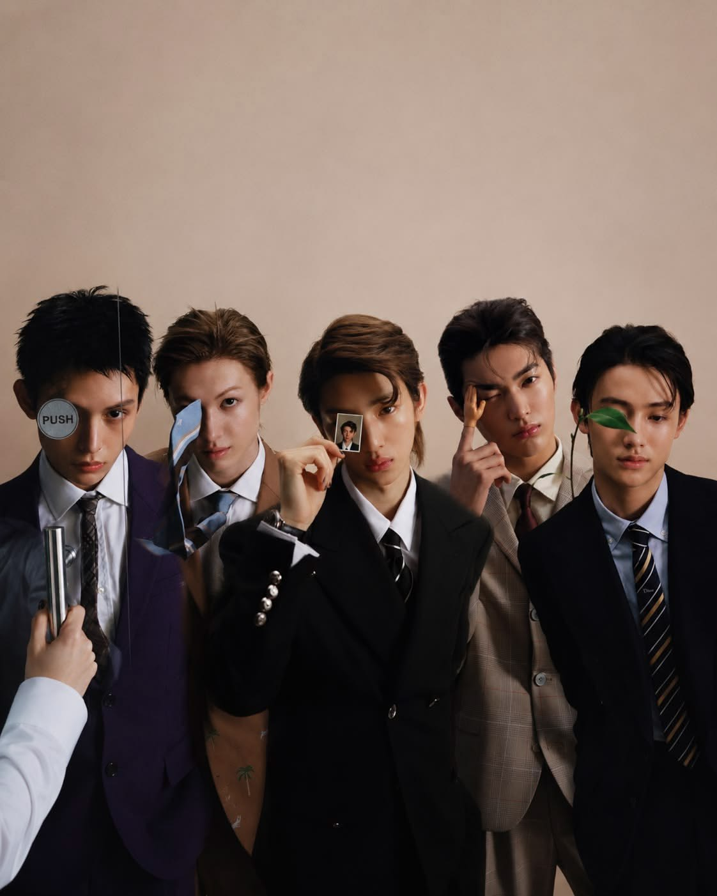
Grupo surcoreano de nueva generación asociado con una propuesta creativa que combina música, estilo visual y cultura juvenil.
Escuchar música →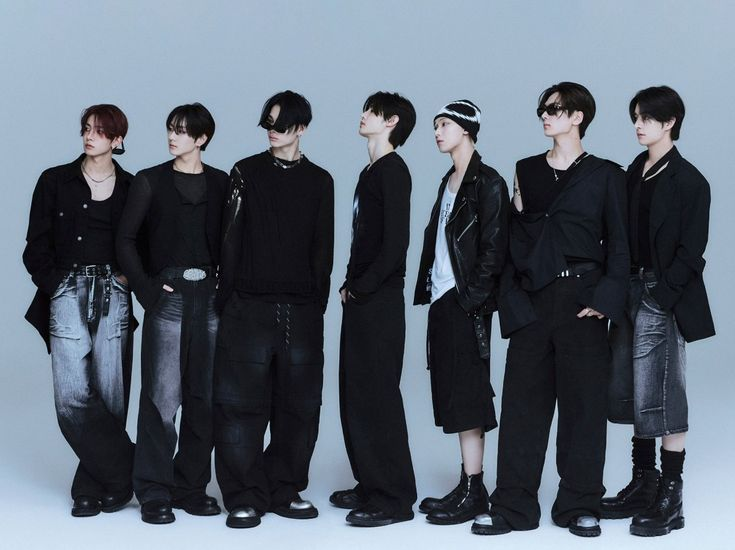
Grupo surcoreano conocido por sus conceptos narrativos, coreografías precisas y canciones que combinan pop, electrónica y otros estilos.
Escuchar música →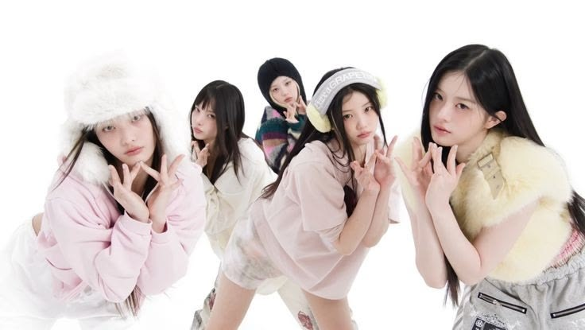
Grupo femenino surcoreano que destaca por sus melodías pop, coreografías y una estética juvenil y soñadora.
Escuchar música →Rimas, identidad, narrativa y cultura urbana.
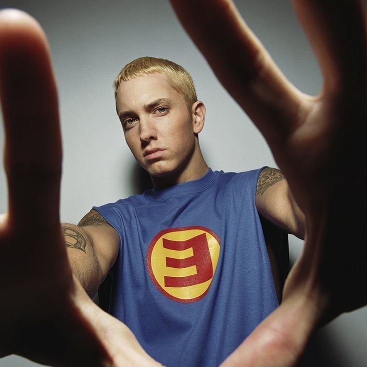
Rapero estadounidense conocido por sus rimas complejas, velocidad vocal y letras autobiográficas y narrativas.
Escuchar música →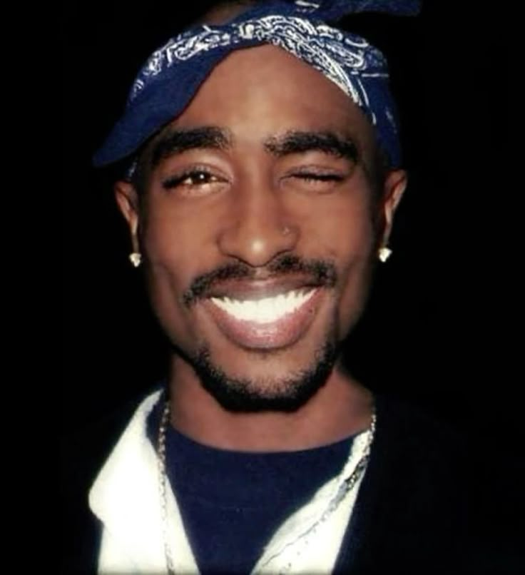
Rapero y actor estadounidense cuya obra abordó la desigualdad, las experiencias personales y las realidades sociales de su época.
Escuchar música →Rapero y empresario estadounidense reconocido por sus letras, su influencia en el hip-hop y su extensa trayectoria musical.
Escuchar música →